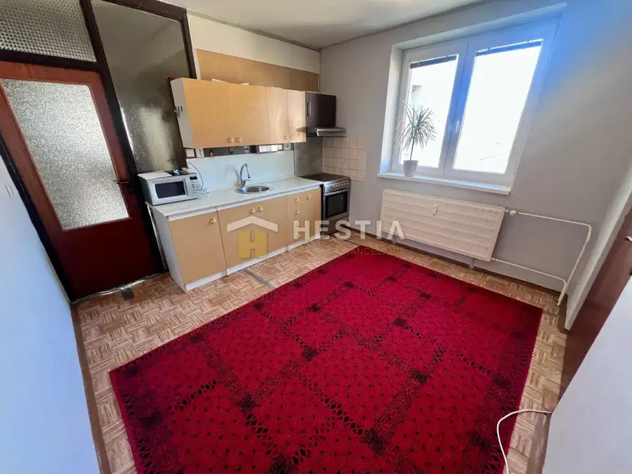
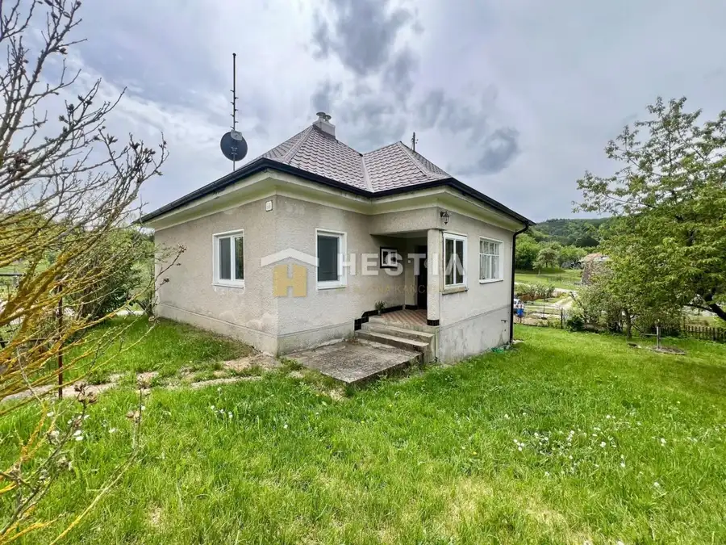
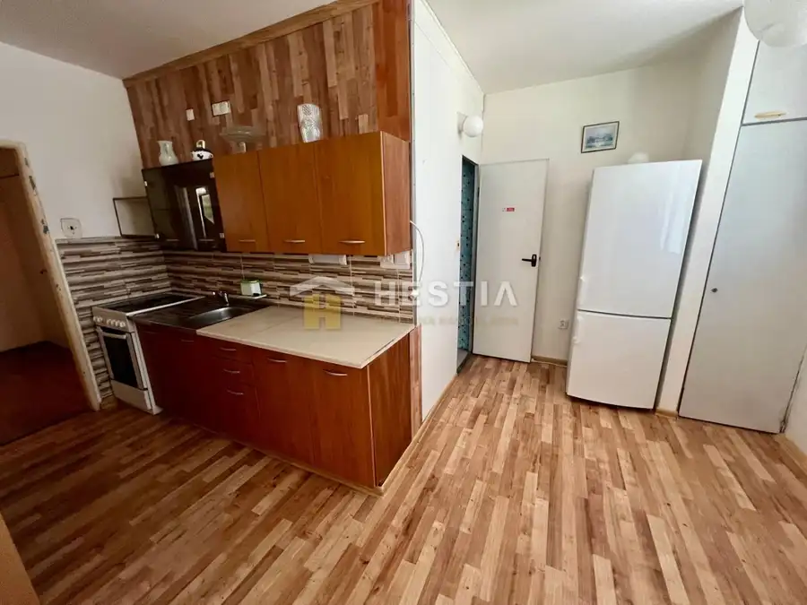

Prenájom · Byt
2 izbový byt na prenájom s balkónom na Kalinčiakovej, voľný od 01.10.2
Senica
Cena dohodou
- Dispozícia2-izbový
- Plocha50 m²
- Poschodie3.
- Stavúplne prerobený
- Vlastníctvoosobné
O nehnuteľnosti
Ponúkame na prenájom príjemný zrekonštruovaný 2 izbový byt, 3 poschodie na Kalinčiakovej ulici, voľný od 01.10.2026. Nachádza sa na 3.poschodí bez výťahu o výmere 50m2 a prenajíma sa komplet zariadený. Pozostáva zo vstupnej chodby, samostatného wc, kúpeľne s vaňou, priestrannej obývacej izby, spálne s výstupom na balkón, kuchyne. Byt je vhodný pre 3 max.4 osoby, bez domácich zvierat. K bytu prislúcha pivnica, bytový dom má elektronický vrátnik. V blízkosti potraviny jednota. Platba: 3x550€ /1x nájom, 1x odplata RK, 1x depozit/ mesačne 550€ 3 osoby bez domácich zvierat internet a tv si hradí podnájomník V prípade ďalších informácií ma kontaktujte na t.č. , alebo mailom
Parametre
| Úžitková plocha | 50 m² |
|---|---|
| Poschodie | 3 |
| Počet izieb | 2 |
| Vlastníctvo | osobné |
| Stav | úplne prerobený |
| Postavené z | panel |
| Dátum zverejnenia | 2. 9. 2026 |
Kde to je
Ďalšie ponuky
Celá ponukaMohlo by Vás zaujímať

Byt10 92 000 €3 izbový byt v Brezovej pod Bradlom s krásnym výhľadom a výťahom Brezová pod Bradlom 3-izbový77 m² Exkluzívne na predaj 3-izbový byt s balkónom – 77,65 m² Ponúkame Vám exkluzívne na predaj priestranný 3-izbový byt o výmere 77,65 m² s balkónom, v…
Rodinné domy10 148 000 €NOVINKA na predaj útulný rodinný dom v srdci Myjavských kopaníc v Ture Myjava 2-izbový99 m² Ponúkame na predaj útulný a kompletne zariadený rodinný dom v nádhernom prostredí myjavských kopaníc, v obľúbenej lokalite Turá Lúka – časť u…
Byt10 75 000 €Skvelá investícia za výbornú cenu – 3-izbový byt v Brezovej pod Bradlo Brezová pod Bradlom 3-izbový62 m²2. podlažie Exkluzívne na predaj 3-izbový byt vo vyhľadávanej lokalite Brezová pod Bradlom, na ulici D. Jurkoviča. Byt sa nachádza na 2. poschodí tehlového…